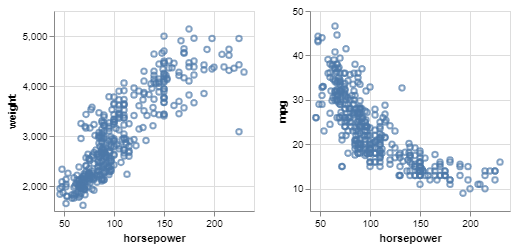
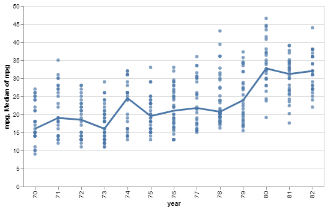
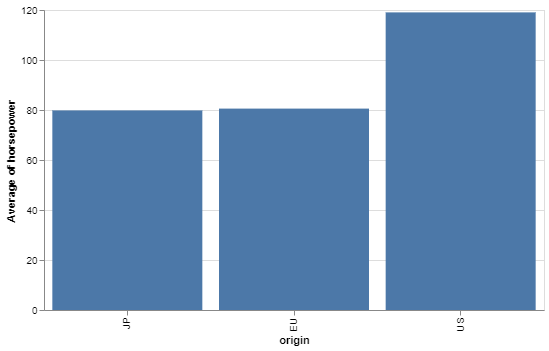
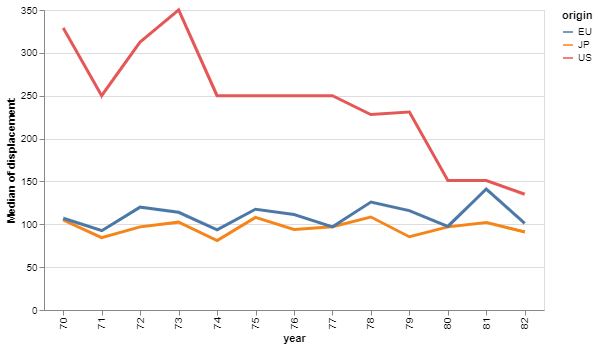

Exercise 1
Introduction
In this exercise, we will basically go over all the
things shown in the first lab class. You will set up your
working directory, load data and visualize it using the
Once you finish your work, you delete the npm_packages folder (you can recreate it by simply calling "npm install" on the command line), zip this folder and upload it to the exercise on the Moodle page.
Setup
First, you need to install npm:
Install guide.
After successful installation, run npm init
to enable npm usage.
Then, you need to install a development server. We will be using snowpack. For basic installation and setup, please follow this guide.
Finally, you need to install
Task 1: Setup (40%)
Setup your working directory such that npm run start
to serve this page via snowpack.
Load Data
To visualize data, you need to load it to the webpage first. You will
be working wiht the cars dataset in data/cars.csv. Remember:
in the lab class, we used d3.csv
to load the data and d3.autotype
to convert the values to their respective types.
Task 2: Load Data (10%)
Load the dataset from data/cars.csv and
print it to the web developer console using
console.log(...).
Analyse the Data
First, work through the following Observable pages of the
- Introduction to Vega-Lite
- Data Types, Graphical Marks, and Visual Encoding Channels
- Data Transformation
Then, use the
-
Find a positive and a negative correlation in the data (Hint: scatterplots are useful here).
-
Is there a trend in miles per gallon over time?
-
What is the average horsepower per country?
-
Is there a trend in the number of cars build per year and country?
vl.register(vega, vegaLite, {}).
Task 3: Analyze the Data (50%)
Learn the basics on how to use the
Hint: store your screenshots in the images folder
and replace the src="" attribute of each img
tag.